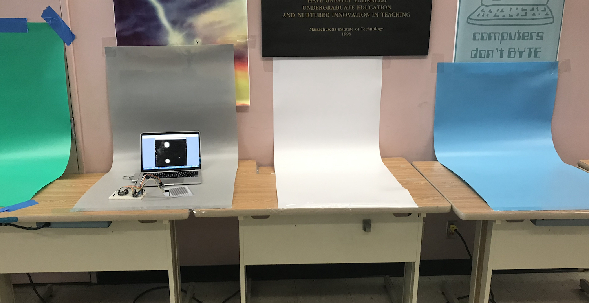
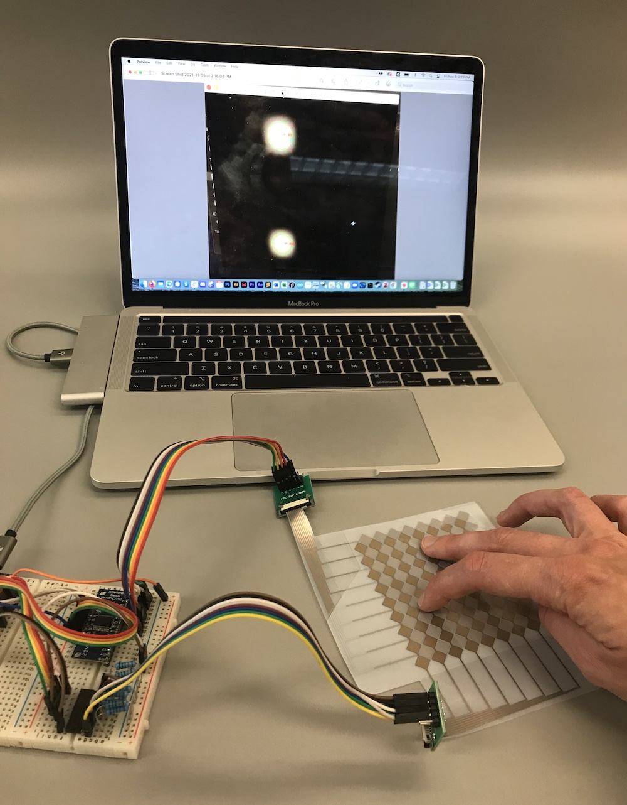
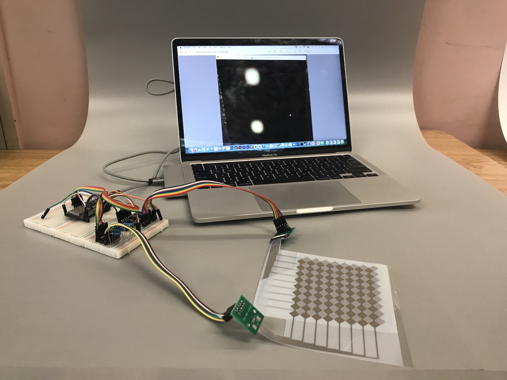
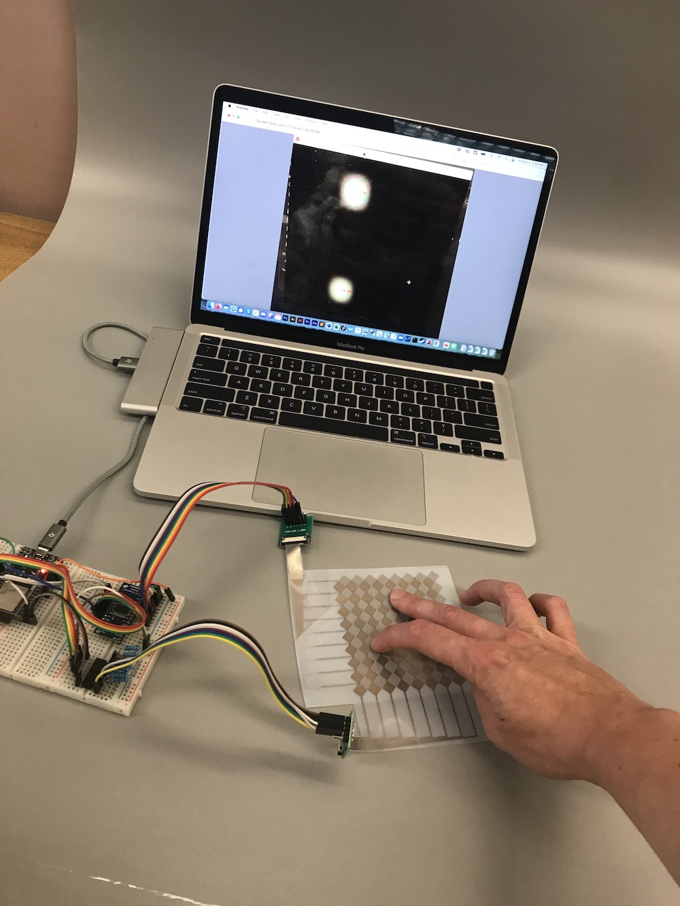
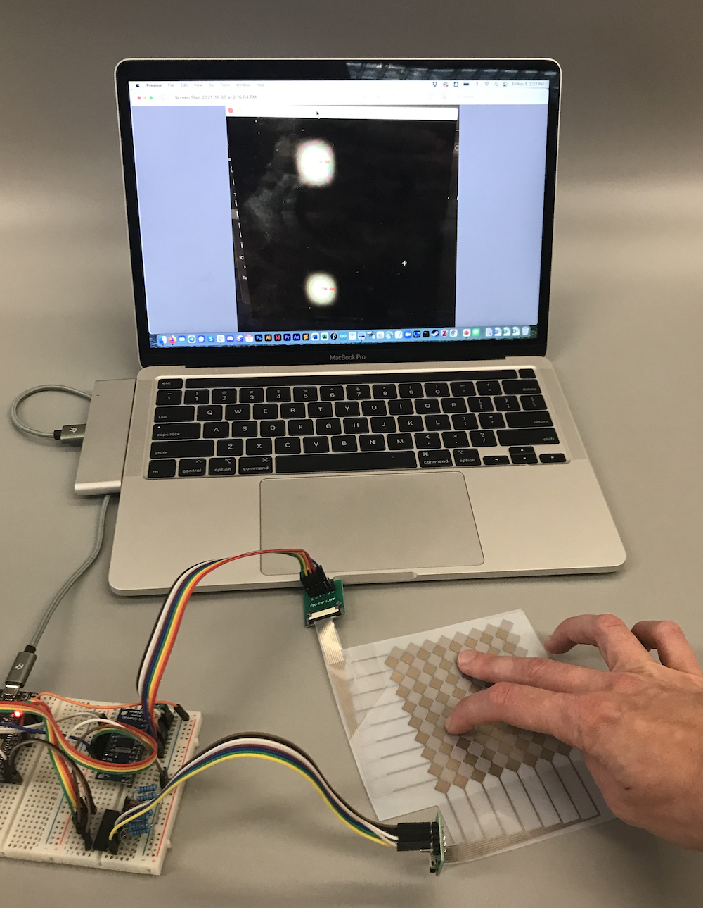
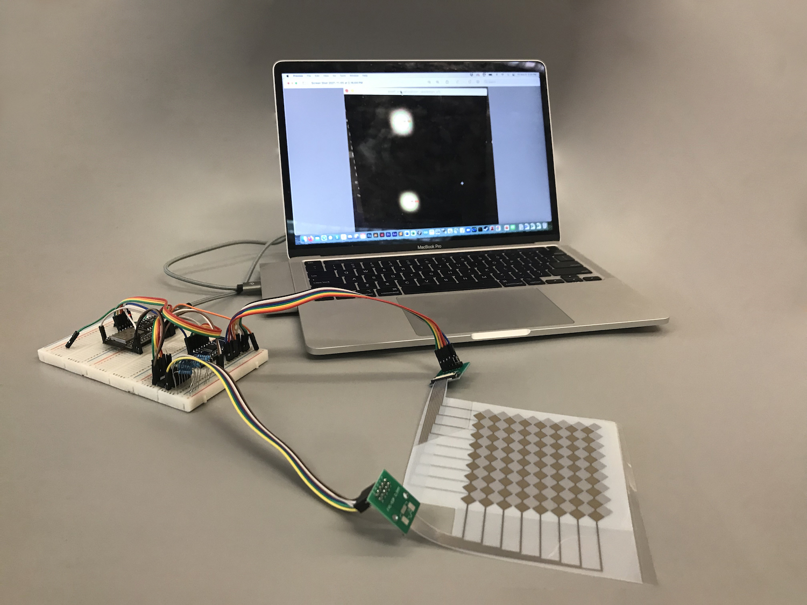

6.810 Engineering Interactive Technologies (fall 2021)
Lab 14: Taking Photos
In this lab, you will take photos with differently colored backdrops. A professional looking photo will make your work look so much better when you put it on your website or project portfolio, so we hope this will be helpful for you. You will also learn how remove unwanted objects from your photo and in general improve the quality of your picture.


Steps:
- Setting up Backdrops
- Arranging Laptop, Touchpad, and Breadboard on Backdrop
- Prepare Processing Window on Laptop Screen
- Taking Photos
- Install Photoshop
- Aligning and Cropping your Photo
- Cleaning up the Edges and Removing Unwanted Objects
Deliverables
At the end of the lab, upload to your student google drive:
5 photos of your multi-touch pad: each photo should show
- the printed multi-touch pad, breadboard, and laptop screen
- either the
signal visualization. blob detection, or pressure visualization, on the laptop screen (ideally live data, but can also be a static frame from a prior pset video)
- at least one finger touching the multi-touch pad
- at least
two different backdrops (e.g. gray, red)
- a few
different angles
- make sure your photos are cropped properly and no stuff is in the image that shouldn't be there.
- for section 6/7: a
before photo (name it before.jpg) that had alignment issues (e.g. very angled) and that needed some stamping and cloning work to be done, and your after photo (after.jpg) that shows that you fixed those issues
Help us Improve Class Materials for Lab14:
Please let us know if you had any trouble with the photo taking or if anything was confusing in the write up.
You can add your comments here.
(1) Setting up Backdrops
To get a nice homogeneous background, we use something that is called a backdrop. It is basically just a long roll of colored paper or PVC sheet that we can use as background.
Setting up Backdrops: We already taped the backdrops to a wall in the class room. You can go ahead and place your multi-touch pad, breadboard, and laptop on it. We have backdrops both where the printers were previously setup as well as on the side where the laminators were.
Cardboard Backdrop vs. PCV: Some of the photos in this tutorial are from this year and some from last year. You can easily spot this by looking at how shiny it is. Last year we used cardboard as the backdrop, which is less shiny than the PVC rolls we have this year and thus looks more even.

(2) Arranging Laptop, Touchpad, and Breadboard on Backdrop
Place Hardware on Backdrop: The backdrops are not super wide, so it is important to place everything as tightly in the middle as possible. It is a good idea to put the laptop in the background and the touchpad and breadboard in the foreground.
Check Photo Edges: Once you placed everything on the backdrop, check that when you take a photo with your mobile phone there are no walls from the class room visible on the edges of the photo. The left photo below is good but the right photo has the walls showing on the edges, which is not great. We recommend you find a compact layout for all your components before you move onto the next step. If you can't find any way to make it fit, you can also read a bit ahead in section 7 how you can remove unwanted content from the edges of a photo with Photoshop. However, the golden rule is always to fix everything you can in the actual photo before going through great lengths in the postprocessing to fix things you could have fixed before.


(3) Prepare Processing Window on Laptop Screen
Once you have your multi-touch placed on the backdrop, you still have to make sure it shows the Processing Window on your laptop.
What Data to Show in the Processing Window: You can either show the raw signal on the Serial Plotter (pset2/3), the blob detection (pset4), or the touch pressure visualization (pset5).
Either Use Screenshot or Live Program: We recommend you use live data since that will be more authentic. However, if that is too much work to get your touchpad to run again, you can also look through your previous pset submissions and put a frame of the video in the background. Just make sure that when you take the photo later that your finger positions match what you show on the laptop screen.
(4) Taking Photos
Now that you prepared everything, you are ready to actually take some photos.
Decide on Photo Perspective: Below are some photos students took last year. It is worth taking a moment to think about which perspective you like the most and why. Which arrangement would you use for your touchpad? What would you change?
Take Photos: Take some photos of your touch pad from different perspectives. Make sure you have one or more fingers touching and your multi-touch pad, breadboard, and laptop are visible and there is either the signal processing, blob detection, or touch pressure visible on the laptop screen.
Different Backdrops: Take photos on at least two different backdrops to see the effect of different colors.
Take Photo with Edges Visible or Object in Photo: Finally, take at least one 'ugly' photo. The ugly photo should have (1) a weird angle (e.g. the laptop looks tilted, see section (6) for an example), and (2) have the wall visible on the edges (see section (7) for an example) or alternatively some other unwanted object in the image. This photo will serve as your before image and we will show you in the next section how to correct such a photo with Photoshop to create your after image.


(5) Install Photoshop
Install Adobe Photoshop: We recommend to use Adobe Photoshop. All MIT students have access to free Adobe Creative Cloud licenses here. All our instructions will be based on Adobe Photoshop. If you use a different photo editing program that's fine but we may be less knowledgable on how to use it and may not be able to help you as much.
Video Tutorials: For the next steps, we made video tutorials that guide you through some tools in Photoshop that are helpful in making a photo look better. The video quality might be better if you click on the YouTube icon in the lower left corner, which opens a new tab and you can set the quality to 1080p.
Only Cosmetic Fixes Allowed: As you will learn below, Photoshop is a powerful tool that allows you to change your photo quite a bit without anyone noticing. You are only allowed to use Photoshop to fix cosmetic issues, e.g. if the wall is visible in the image although you wanted it to be backdrop or if a wire is hanging out from behind the laptop although you had planned to hide it behind the laptop screen. You are not allowed to manipualte the photo to create functionality that was never there. For instance, let's assume you never finished the blob detection implementation, you would not be allowed to photoshop blobs into your visualization to pretend that your blob detection is working. These are basic ethics of photo editing and you should keep those in mind as you apply the skills we will teach you to other projects.
(6) Aligning and Cropping your Photo
First, we will show you how you can properly align and crop your photo. You can see an example below where the laptop was originally very tilted in the image and we corrected it to be more horizontal.
Before and After Photos:


Use your 'before' photo: Use your ugly before photo and apply the steps outlined in the video below to correct the alignment. Ideally you also apply these steps to all other photos you took so they look professional.
Short Cuts:
panning: spacebar + left mouse
zooming: option + scroll
ruler: command + R to activate ruler toolbar, then drag the ruler line from the ruler bar
rotate image: go to top menu bar -> image -> image rotation -> arbitrary, then enter your rotation angle
crop: press 'c', drag the edges until happy, then double click on image to activate crop
save: command + 's' or go to menu File -> save as
(7) Cleaning up the Edges and Removing Unwanted Objects
Next, we will show you how to clean up the edges in case you see a bit of wall in your photo and how to remove unwanted objects in your photo. Below you can see an example where we both replaced the wall segments on the left and right side of the photo as well as removed the cable that was sticking out on the left side of the laptop screen.
Before and After Photos:

Use your 'before' photo: Continue fixing your ugly before photo and apply the steps outlined in the video below to remove any wall that is in your image or other unwanted object. Ideally you also apply these steps to all other photos you took in case they have similar issues so they look professional.
Short Cuts:
clone stamp tool: press 's'
sampling an area with the Clone Stamp Tool: Option Key + left mouse click
using the sampled area while clone tool is active: left mouse click
patch tool: press ‘j’, select an area you want to replace with other pixels, then drag the area onto the area you want to merge with
lasso tool: press ‘l’
remove selection: control + d
Once you are done, save your photo as your after photo and put it in the google drive as part of your deliverables.
Deliverables
At the end of the lab, upload to your student google drive:
5 photos of your multi-touch pad: each photo should show
- the printed multi-touch pad, breadboard, and laptop screen
- either the
signal visualization. blob detection, or pressure visualization, on the laptop screen (ideally live data, but can also be a static frame from a prior pset video)
- at least one finger touching the multi-touch pad
- at least
two different backdrops (e.g. gray, red)
- a few
different angles
- make sure your photos are cropped properly and no stuff is in the image that shouldn't be there.
- for section 6/7: a
before photo (name it before.jpg) that had alignment issues (e.g. very angled) and that needed some stamping and cloning work to be done, and your after photo (after.jpg) that shows that you fixed those issues
5 photos of your multi-touch pad: each photo should show
- the printed multi-touch pad, breadboard, and laptop screen
- either the
signal visualization. blob detection, or pressure visualization,on the laptop screen (ideally live data, but can also be a static frame from a prior pset video) - at least one finger touching the multi-touch pad
- at least
two different backdrops(e.g. gray, red) - a few
different angles - make sure your photos are cropped properly and no stuff is in the image that shouldn't be there.
before photo (name it before.jpg) that had alignment issues (e.g. very angled) and that needed some stamping and cloning work to be done, and your after photo (after.jpg) that shows that you fixed those issuesPlease let us know if you had any trouble with the photo taking or if anything was confusing in the write up.
You can add your comments here.
cosmetic issues, e.g. if the wall is visible in the image although you wanted it to be backdrop or if a wire is hanging out from behind the laptop although you had planned to hide it behind the laptop screen. You are not allowed to manipualte the photo to create functionality that was never there. For instance, let's assume you never finished the blob detection implementation, you would not be allowed to photoshop blobs into your visualization to pretend that your blob detection is working. These are basic ethics of photo editing and you should keep those in mind as you apply the skills we will teach you to other projects.5 photos of your multi-touch pad: each photo should show
- the printed multi-touch pad, breadboard, and laptop screen
- either the
signal visualization. blob detection, or pressure visualization,on the laptop screen (ideally live data, but can also be a static frame from a prior pset video) - at least one finger touching the multi-touch pad
- at least
two different backdrops(e.g. gray, red) - a few
different angles - make sure your photos are cropped properly and no stuff is in the image that shouldn't be there.
before photo (name it before.jpg) that had alignment issues (e.g. very angled) and that needed some stamping and cloning work to be done, and your after photo (after.jpg) that shows that you fixed those issues